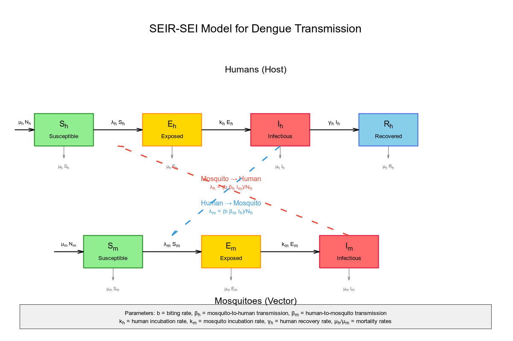

Stan-Based Epidemiological Models II: Modeling Dengue
Table of Contents
Introduction
This post continues the exploration of epidemiological models introduced in a previous entry. Here, I present the foundational version of the model that will underpin our project on forecasting potential dengue outbreaks and identifying transmission corridors shaped by climate change in Santiago, Chile.
Modeling dengue
Vector-borne diseases require coupled mathematical models that capture transmission dynamics between human hosts and mosquito vectors. For dengue fever, the simplest effective model combines SEIR dynamics for humans with SEI dynamics for mosquitoes, creating a system of seven differential equations that captures the essential biological processes. This minimal framework provides the mathematical foundation needed for Stan implementation while incorporating the most critical epidemiological parameters.
Mathematical framework for coupled SEIR-SEI dynamics
The fundamental structure links human susceptible-exposed-infectious-recovered dynamics with mosquito susceptible-exposed-infectious dynamics through force of infection terms that represent transmission between species.
Core differential equations
Human population dynamics (SEIR):
dS_h/dt = -(b β_h I_m S_h)/N_h dE_h/dt = (b β_h I_m S_h)/N_h - k_h E_h dI_h/dt = k_h E_h - γ_h I_h dR_h/dt = γ_h I_h
The infection term (b βh Im Sh)/Nh represents the rate at which susceptible humans become infected through mosquito bites, and it captures the fundamental mechanics of dengue transmission. This term depends on several key factors working together: the number of infectious mosquitoes in the population (Im), the biting rate or how frequently each mosquito bites humans per day (b), the probability that a bite from an infectious mosquito actually transmits the virus to a susceptible person (βh), and the number of susceptible people available to be bitten (Sh). The term is divided by the total human population (Nh) to convert this into a proper rate per capita. Essentially, this tells us that disease transmission increases when there are more infectious mosquitoes around, when mosquitoes bite more frequently, when each bite is more likely to cause infection, and when there are more susceptible people in the population. It's scaled by population size so that larger populations don't automatically have higher per-person infection rates.
The exposed humans equation dEh/dt = (b βh Im Sh)/Nh - kh Eh describes how people flow into and out of the incubation stage, where the inflow is exactly the infection term from susceptible humans (people who just got bitten and infected), while the outflow kh Eh represents exposed people finishing their incubation period and becoming infectious at rate kh. The infectious humans equation dIh/dt = kh Eh - γh Ih shows that people become infectious after incubation (inflow kh Eh) and then recover at rate γh, making γh Ih the number of people recovering per day. Finally, the recovered equation dRh/dt = γh Ih simply captures that all the people recovering from infection (γh Ih) join the imμne population, with no outflow since recovered individuals remain imμne to that dengue strain.
Mosquito population dynamics (SEI):
The mosquito model is simpler: they don't recover, just die. But we have another term here, birth and death rates of mosquitoes.
dS_m/dt = μ_m N_m - (b β_m I_h S_m)/N_h - μ_m S_m dE_m/dt = (b β_m I_h S_m)/N_h - k_m E_m - μ_m E_m dI_m/dt = k_m E_m - μ_m I_m
The mosquito population dynamics follow a simpler SEI pattern since mosquitoes don't recover from dengue infection. The susceptible mosquito equation dSm/dt = μm Nm - (b βm Ih Sm)/Nh - μm Sm shows that new mosquitoes are constantly born at rate μm Nm (where μm is the mosquito mortality rate of about 0.134-0.164 per day, corresponding to their short 14-28 day lifespan), while susceptible mosquitoes leave this compartment either by getting infected when they bite infectious humans at rate (b βm Ih Sm)/Nh (where b is the biting rate of ~1 bite per day, βm is the human-to-mosquito transmission probability of 0.3-0.9, and Ih is the number of infectious humans) or by dying at rate μm Sm. The exposed mosquito equation dEm/dt = (b βm Ih Sm)/Nh - km Em - μm Em captures mosquitoes that have acquired the virus but are still in the extrinsic incubation period, flowing in from new infections and flowing out either by completing incubation at rate km (approximately 1/10 per day for the standard 8-12 day incubation period) or by dying. Finally, the infectious mosquito equation dIm/dt = km Em - μm Im represents mosquitoes that have completed viral development and can now transmit dengue to humans, with inflow from completed incubation and outflow only through death since mosquitoes remain infectious for life.
But why did we not include births and deaths in the human SEIR model. For short-term dengue outbreaks lasting weeks to months, it would not make sense to include human births and deaths because these demographic terms (μh, μm) are often negligible compared to disease dynamics. Consider the timescales involved: human lifespan averages around 70 years, giving a daily mortality rate μh of approximately 0.00004 per day, while dengue incubation takes about 5.5 days (kh ≈ 0.18/day) and recovery occurs in roughly 6 days (γh ≈ 0.17/day). This means the disease processes operate about 4,000 times faster than human demographics, making births and deaths essentially irrelevant noise when studying acute outbreaks where the epidemic dynamics unfold over weeks rather than years, as in this example case.
Critical coupling mechanism
The magic happens in the force of infection terms that link the two populations:
λ_h = (b β_h I_m)/N_h: How fast humans get infected (depends on infectious mosquitoes) λ_m = (b β_m I_h)/N_h: How fast mosquitoes get infected (depends on infectious humans)
This creates a feedback loop: more infectious mosquitoes → more infected humans → more infectious mosquitoes → and so on. But it's self-limiting because as more humans become immune (Rh), fewer are susceptible (Sh), breaking the cycle. Think of it like a dance between two populations, where each partner's moves depend on what the other is doing. The disease can only persist if both populations keep "dancing" together, if either runs out of susceptible individuals, the music stops.
All in all, the model looks like this (the gnuplot source file is
here.)
:
Dengue model in Stan
—
Now you can go home or read the first part of this series.